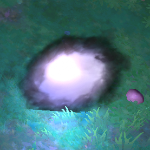

主城
介紹albion全地圖的十座城市，不包含皇家大陸的邊城。主城皆為安全區，即使相鄰的區塊為PvP區。
皇家大陸六城
位於安全區的五大城：
| 白城(北偏東) | 綠城(東) | 黃城(南) | 藍城(西) | 紫城(北偏西) |
以及位於皇家大陸中央的紅城：
| 紅城(中央) |
異域三城
在大地圖上，異域位於皇家大陸北方，區塊數約為皇家大陸的三倍左右。| 莫甘娜(北) | 梅林(東南) | 亞瑟(西南) |
這三座城市均位於黑區深處，最少要跑5張黑區圖(強制PvP區)。
迷霧城
迷霧城(Brecilien)，顧名思義為迷霧當中的城市。比起上述九城，要進入迷霧城較為麻煩，首先你必須在開放世界地圖中找到鬼火，如圖：

進入後為迷霧，在迷霧內解除受困鬼火、引導鬼火至定點、完成刷怪任務會增加Brecilien地位點數。
只有少數的迷霧才有迷霧城入口。(大概 5% ?)
Brecilien地位需要達到50,000，迷霧城入口才會開啟。
少數的阿瓦隆內，也會有迷霧城入口：
編輯紀錄
作者: runnywolf
最後編輯日期: 2023/3/11